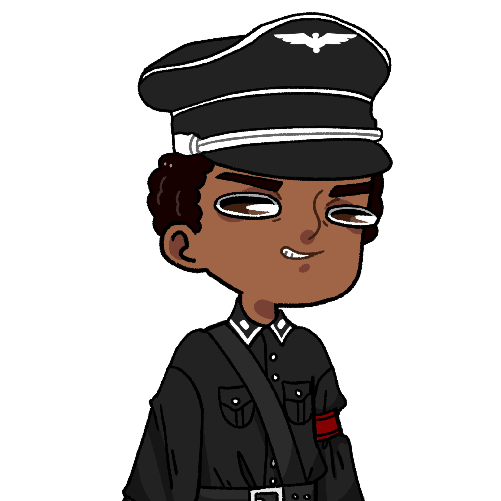

C’est vraiment un pays de merde l’Argentine !
C’est vraiment un pays de merde l’Argentine !
 Ouais c’est clair ! En plus ils parlent pas français !
Ouais c’est clair ! En plus ils parlent pas français !
Au moins on a choisi la bonne LV2… Hein Pauline ?
 C’est moi qui ai tout fait quand même…
C’est moi qui ai tout fait quand même…
Oui, mais tu es un personnage secondaire ! Dommage pour toi Pauline !
Ils marchèrent jusqu’en début de soirée, où ils atteignirent enfin un bidonville, se situant à l’adresse donnée par Esteban. Les taudis étaient regroupés autour d’un bâtiment plus imposant, duquel émanait de la lumière rouge ainsi qu’une multitude de voix. Le tout était enveloppé d’une forte odeur de brûlé.
Il nous a dit quoi déjà si c’était encore occupé ?
Qu’on pouvait aller le voir sans problème je crois. Pauline, tu y vas ?
Mais pourquoi moi ?
Bah je pensais que tu aimerais être un peu plus impliquée dans nos aventures, mais si tu le prends comme ça…
Non non c’est bon j’y vais.
Le bâtiment en ciment usé était fermé par un pauvre drap en piteux état. Pauline glissa son visage entre le mur et ce qui servait de rideau, et découvrit une salle qui avait l’air d’avoir accueilli une fête. Les tables et les chaises étaient recouvertes de divers emballages, et restes de repas. Ce n’est pas ce qui attira le regard de Pauline, contrairement au karaoké installé dans le fond de la pièce, tranchant complètement avec l’aspect sale que renvoyait la salle. Elle avança prudemment vers cette zone éclairée, en tentant de comprendre la chanson que chantait le groupe d’individus. Plus elle s’approchait, plus elle voulait partir. Les personnes qu’elle apercevait étaient habillées toutes de la même manière : un grand manteau noir, une coiffe rappelant certains képis militaires, des bottes aux allures solide, et surtout leurs bracelets rouge vif, s’accordant parfaitement avec la lumière de la pièce. La musique aussi semblait très agressive, et n’était en rien une langue latine. On aurait dit des cris scandinaves. Cette impression était renforcée du fait qu’aucune des personnes présentes ne chantaient juste. Soudain, elle reconnut l’homme qui tenait le micro.
 ♫ Es schau’n aufs Hakenkreuz voll Hoffnung schon...♫
♫ Es schau’n aufs Hakenkreuz voll Hoffnung schon...♫
Alan ?
 Ach nein ! Qu’est-ce que tu fais ici ? Je suis occupé mein Kinder !
Ah… Mais on a besoin de toi p…
Ich werde das reparieren, geh ohne mich weiter. Bien, allons régler ça dehors.
Alan attrapa le bras de Pauline avec fermeté, et l’entraîna dehors.
Super, t’as retrouv… Oh mon dieu ! Alan… Mais qu’est-ce que…
Bah quoi qu’est-ce qu’il a Alan ?
Mais t’es aveugle ou quoi ? Il est habillé comme un membre de la Gestapo, mais sinon tout va bien !
Mais non ! Alan ne peut pas être nazi.
Parce que c’est une personne généreuse, intentionnée, polie, respectueuse, honnête, intelligente, débordante de gentillesse, et qui n’a jamais fait de mal à personne ?
Non, on s’en fout de ça. C’est pas possible parce qu’il a fait espagnol en LV1. En plus je le trouve cool son manteau !
Je ne voudrais surtout pas vous déranger, mais je suis pressé…
Ah oui désolé. On a besoin de toi pour sauver Léopold. Il a été attaqué par ton arme au nom imprononçable, et on cherche un remède.
Le Ufiawgun ? Qui vous a dit qu’il y avait un remède ?
Personne, c’est une déduction.
Il n’y a pas de remède. Il est condamné à se faire abuser sexuellement par Ivan.
Non… C’est pas possible…
On a fait tout ça pour rien ?
Mais pourquoi t’as filé un truc pareil à Matéo ?!
Il me l’a volé ! Après le coup qu’il m’a fait avec ma précédente invention, je suis pas près de refaire du commerce avec ce Arschgesicht.
Ce quoi ?
Tu es sûr qu’il n’y a aucun moyen de le sauver ?
Eh bien… il y a peut-être eine Solution… mais je ne peux pas vous aider. J’ai ein emplois du temps très chargé, et j’ai d’autres occupations que de me battre pour des causes aussi futiles. Außerdem ist das Hentai gut.
Je t’en supplie aide nous ! Je donnerais n’importe quoi pour Léopold !
N’importe quoi ? Dans ce cas, j’ai bien ein idée…
Alan se pencha à l’oreille de Samy, pour lui murmurer quelques broutilles incompréhensibles.
Ça marche !
Super ! Je l’attends dans ma chambre dans 30 minutes !
Alan détala comme un lapin, laissant Samy, Ivan et Pauline comme des cons au milieu d’une ville insalubre.
Tient ? J’ai reçu un message. On s’en fout lol, c’est sûrement pas important ! Bon je vais vous expliquer le plan. Depuis que notre pauvre Alan s’est isolé ici, il n’a point eu de visite de la part de la gente féminine. Et avec tout le stress de son travail, il aurait bien besoin d’un petit remontant...
Je le sens très mal…
J’ai pas compris, qu’est-ce que tu essaies de nous dire ?
Pauline, tu vas te rendre utile.
Oh mon dieu…
La nuit était tombée sur ce petit bidonville d’Argentine, tandis que Pauline arrivait devant une porte blindée, sur laquelle il était marqué « Dr. Alan von Wissenschaft » au charbon. Elle toqua à la porte, qui s’ouvrit dans la seconde malgré son poids. Alan se tenait derrière. Il avait délaissé ses vêtements Hugo Boss pour une blouse blanche.
Bonsoir…
Bonsoir ! J’avais peur que tu ne viennes pas.
Bah si, je suis venu.
Oui.
…
Entre, pardon !
Pauline découvrit un petit appartement, composé d’une pièce servant de cuisine et de salon. Il y avait deux autres petites pièces, les toilettes et la chambre, uniquement accessible par un escalier.
Tu as faim ?
Non pas trop…
Tant mieux, vu ce que tu vas te bouffer…
Quoi ?
Non rien ! Du coup tu veux visiter ?
Ça a l’air assez petit… comment tu fais sans salle de bain ?
Tu sais, quand on vit seul, on fait pas gaffe à tout… Tu veux voir ma chambre ?
Ok…
Ils montèrent à l’étage, et arrivèrent dans une pièce aussi grande que la cuisine salon. Elle était remplie d’étagères sur lesquelles étaient posées différentes collections de figurines en tout genre.
Qu’est-ce que c’est ça ?
Ma collection de Kidum.
Ah… c’est pour ça que tu ne veux pas nous aider ? Tu es du côté de Matéo…
Non pas spécialement, ils m’ont été offert par Ambra, elle les avait en double.
Alors pourquoi tu refuses de nous aider ?
Je ne refuse pas… J’aimerais juste… profiter de ma situation pour pouvoir retrouver la sensualité d’ein frau.
Pourquoi tu n’en cherches pas une en ville ?
Parce que c’est trop compliqué. Alors que là… j’ai enfin quelque chose à ma portée !
Soudain, Alan déchira sa blouse, et se retrouva nu en 1,825 secondes. Il attrapa Pauline avec une force qu’on ne lui soupçonnerait pas, et la plaqua sur le lit.
Alan… tu m’écrases…
Oups désolé ! Je suis tellement heureux…
Attends !
Quoi ?
Je veux savoir comment faire pour sauver Léopold avant. De toute façon c’est pas comme si je pouvais m’enfuir…
Si tu veux… Le Dr Friedmann m’a dit qu’il avait créé une solution capable d’inverser le processus, et qu’il la gardait au centre de son labo. Il me semble qu’il l’a installé dans une ville dégueu en banlieue parisienne. Satisfaite ?
Oui.
Alors satisfait moi maintenant !
Alan réussi à déshabiller Pauline en 1,518 secondes, et se jeta sur elle.
Aïe !
Quoi ? Moi aussi je me suis trompé de trou ?
Non, j’ai juste pas l’habitude…
Attend on va utiliser ça.
Alan prit un des nombreux mini godes Kidum posé sur son étagère et il l’enfonça violemment.
Ça a marché avec Hans, ça devrait marcher avec toi.
Trop occupé à regarder le Kidum se dilater, Alan n’entendit pas l’intrus qui s’était glissé dans sa chambre.
PAN
D’un coup de fusil à pompes, Samy abattit Alan.
T’as eu le temps de récupérer les infos j’espère ?
Tu aurais pu demander avant de tirer…
Tu les as ?
Oui, Mathis garde un remède quelque part vers Paris.
Ok super, on s’arrache. Et vire-moi ton Kidum, je veux plus jamais revoir ces saloperies.